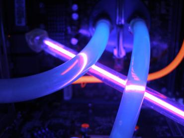
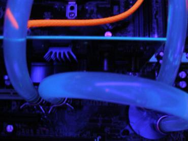
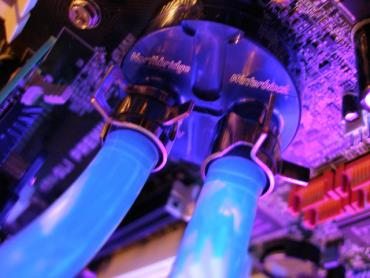
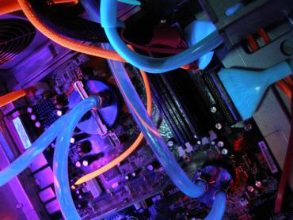
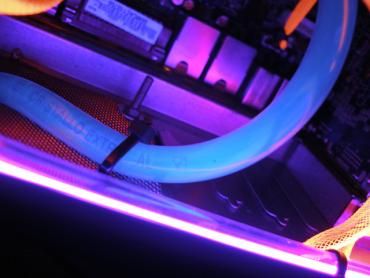
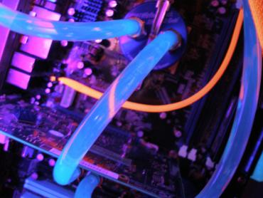
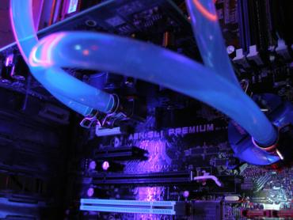
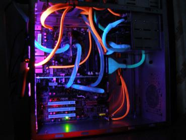

Tiger Electronics UV Fluid Blue
Tobulėjant kompiuterių aušinimo sistemoms vis dažniau pasirenkamas kompiuterių aušinimas vandeniu. Pagrindiniai aušinimo vandeniu privalumai - efektyvumas ir nedidelis triukšmo lygis.
Lietuvoje šis aušinimo būdas, dėja, vis dar priskiriamas egzotikai, tačiau atskiros kompiuterių entuziastų grupės jau ganėtinai seniai jį praktikuoja, dalinasi žiniomis ir patirtimi. Žmonės, modifikuojantys kompiuterius - moderiai, dažnai aušinimo sistemą užpildo specialiu skysčiu, vadinamu Fluidu, kuris šviečiant UV šviesai pradeda švytėti. Šioje apžvalgoje apžvelgsiu Tiger Electronics UV Fluid Blue gaminį.
Žvilgsnis iš arčiau
Fluidas - skystis, kurį sumaišius su distiliuotu vandeniu, gaunamas UV šviesoje švytintis vandens aušinimo sistemos užpildas. Fluidas yra cheminė medžiaga, todėl nepamirškite laikytis saugos taisyklių naudojimo metu.
Mano apžvelgiamas Tiger Electronics UV fluidas yra mėlynas. Neapšvietus jo UV šviesa jis nešvyti ir yra visiškai bespalvis.
Indo talpa 50ml. Maišant fluidą su distiliuotu vandeniu patartina išlaidyti proporciją 1:12,5 - tai yra maišyti su 625ml vandens. Taip bus užtikrinamas maksimalus švytėjimas, bus pasiektas gražiausias efektas. Rekomendacija nėra taisyklė, todėl, reikalui esant, galite naudoti ir mažesnį kiekį fluido.
Testavimas
Metas išmėginti šio UV fluido savybes. Štai fotografijos dienos šviesoje bei tamsoje, šviečiant UV CCFL.
Kaip matote skirtumas tikrai pastebimas. Manau pats laikas šį fluidą sumaišyti su mano vandens aušinimo sistemos distiliuotu vandeniu. Mano pasirinkta proporcija buvo apie tris kartus mažesnė, tai sudarė 1:36. Savaime aišku, jog maksimalaus švytėjimo lygio nepasieksiu.
Pirmojoje foto matote sistemą be fluido, antrojoje - vandens rezervuaras į kurį įmaišiau fluidą.
Užpildymo fluidu metu keli lašai pateko ant korpuso, foto matote rezultatą. Nereikia baimintis - fluidas nėra tiek chemiškai aktyvus, kad paliktų dėmę - jis nesunkiai nuvalomas skudurėliu.
Belieka įjungti sistemą ir stebėti, kaip nudažytas sistemos užpildas pakeis senąjį užpildą. Nieko nelaukdamas pateikiu galutinio rezultato fotografijas:
       
Išvados
Rezultatas tikrai ispūdingas, įskaitant tai, jog jis gautas naudojant tris kartus mažesnį fluido/vandens santykį. Taipogi didelę įtaką turi geras UV apšvietimas. Rekomenduočiau naudoti bent dvi UV CCFL lempas, montuojant vieną vertikaliai o kitą - horizontaliai.
Jeigu nesate mėlynos spalvos mėgejas - nebėda, kompanija Tiger Electronics Jums siūlo platesnę spalvinę gamą, tai žalias, geltonas, raudonas fluidai.
Pliusai:- švyti UV šviesoje
- neribotas galiojimo laikas
- plati spalvinė gama
- kaina
 Šis, mano apžvelgtas,
Tiger Electronics UV Fluid gaminys turi vieną minusą - kaina. Kita vertus - jeigu galite sau lesiti vandens aušinimo sistemą, manau šis gaminys tiesiog privalo atsidurti Jūsų pirkinių krepšelyje.
Šis, mano apžvelgtas,
Tiger Electronics UV Fluid gaminys turi vieną minusą - kaina. Kita vertus - jeigu galite sau lesiti vandens aušinimo sistemą, manau šis gaminys tiesiog privalo atsidurti Jūsų pirkinių krepšelyje.
Jei norėsite pakomentuoti mano straipsnį arba pareikšti savo nuomonę, apsilankykite Modding.lt forume.


{kind=link}
{kind=link}
{kind=link}
{kind=link}
{kind=link}
{kind=link}
{kind=link}
{kind=link}
{kind=link}
{kind=link}
{kind=link}
{kind=link}
{kind=link}
{kind=link}
{kind=link}
{kind=link}